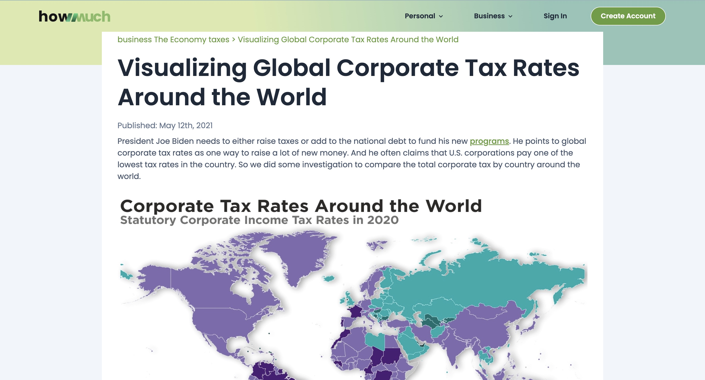

About this exercise
This exercise was about choosing a data visualisation published on HowMuch.net and investigate the integrity of the data behind it. Building on a class example where identified a significant data error in a different HowMuch.net piece, the goal was to trace an independently chosen visualisation, verify individual values against that primary data.
The visualisation

Variables and levels of measurement
Three variables are encoded in this visualization. They are country, region, and top corporate tax rate. Both country and region are categorized or nominal measurements. They do not have a meaningful ranking or interval between their categories. For example, Suriname is not more or less than Puerto Rico, and Asia does not precede Europe in any meaningful way. These are groupings applied to the data for convenience. Tax rate is a ratio measurement. It represents an absolute zero which indicates the actual absence of corporate taxation. It is clearly observable in countries such as Anguilla and the Bahamas and ratios between values are meaningful, since the corporate taxes in France(32.02%) is about six times than Ireland’s which is 12.5%.
Alignment of data and question
The justification for increasing taxes on American companies offered by President Biden, namely that the United States has one of the lowest corporate tax rates in the world. It creates the question that is it true that corporate tax rate in America is indeed one of the lowest in the world. This data fits that question, since it contains corporate tax rates of all countries of the world. United states ranked 85th in the world of 223 countries with a rate of 25.77%. The weakness lies where the person who only reads the introductory part can mistakenly understand that data proves Biden right while findings contradict the initial assumption.
Verifying the data
| HowMuch.net claim | Tax Foundation figure | Result |
|---|---|---|
| France 32.02% | 32.02% | Match |
| Puerto Rico 37.5% | 37.5% | Match |
| Portugal 31.5% | 31.5% | Match |
| Comoros 50% | 50.0% | Match |
| Barbados 5.5% | 5.5% | Match |
| US 25.77% | 25.77% | Match |
| 15 countries at 0% | 15 zero rate jurisdictions | Match |
| Median rate 25% | Calculated: 25.0% | Confirmed |
All eight values checked against Tax Foundation’s main 2020 dataset, including the US rate, highest and lowest rates mentioned in the examples, and the number of zero rates. The statement about the median rate being equal to 25% and verified independently from dataset with 100% precision could not be found in Tax Foundation’s findings. It requires an additional step of verification and did not represent any discrepancies. One inconsistency was observed that the downloadable dataset contains 224 jurisdictions only. All values were verifiable and matched with only one inconsistency. The consistency of this data visualization is high and more accurate.
Quality of the data source
References
- Asen, E. (2020, December 9). Corporate tax rates around the world, 2020. Tax Foundation. https://taxfoundation.org/data/all/global/corporate-tax-rates-around-the-world-2020/
- Howmuch.net. (2021, May 12). Visualizing global corporate tax rates around the world. https://howmuch.net/articles/corporate-tax-rates-around-the-world